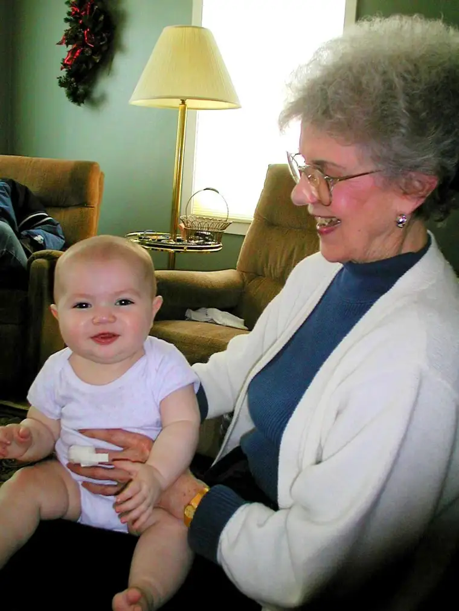

It was a rare day that you’d find a hair on her lovely head misplaced or her lipstick the slightest bit smudged.
It was a rare day that you’d find a hair on her lovely head misplaced or her lipstick the slightest bit smudged.
My husband’s maternal grandmother, Gladys Hofer Kleinsasser, was a picture of physical grace and beauty. Which is why her comedic ribbing often caught us so off guard, but at the same time, delighted us so much.
But it wasn’t until her funeral last month that I received such a clear glimpse of all this woman really was and gave in her nearly 94 years of life.
The insight came through her brother, Sam. Along with being her kid brother, “Uncle Sam,” as we know him, was one of her dearest comrades in life, not to mention a skilled orator.
From the pulpit of her church, Messiah Lutheran Church in Hoffman, Minn., Sam artfully presented the confounding idea that death doesn’t always come as an enemy, but at times arrives as a friend, as it did in the case of his sister’s passing.
Having reached me while in the midst of a lengthy string of such losses in these earliest months of 2016, Sam’s insights resonated deeply.
Gladys began her life knowing quite the opposite of death-as-friend, however. Her father was killed tragically in an automobile accident when she was only 5, and she watched her twin sisters take their last breath as 3-month-old infants, one after the other.
Gladys had barely recovered from those losses when her mother became gravely ill. She was only 11 when she and Sam were summoned to their mother’s bedside to hear her last words whispered into their hearts.
As Sam told it at her funeral, Susanna had a message of urgency to relay. “I’m going to heaven soon,” she’d told her two young, heart-broken children. “Live your lives in a way that we can be together again someday.”
Being left an orphan could hardly have been seen as a blessing, and yet the wisdom imparted that sad day became an eternal gift to these two remaining siblings, now compelled to live lives of faith through their mother’s love.
At her own funeral, we also discovered Gladys had been something of a rebel in her teen years, cutting her hair short when other girls wouldn’t have dared, and tempting fate in other ways. But eventually, both she and Sam began to fulfill their mother’s dying directive.
Sam gave his life to the Lord through becoming a pastor, a shepherd who lives for sharing the good news of the resurrection to everyone who will listen.
Gladys chose another route, marrying and becoming a helpmate to her husband, John, creating a home for their two daughters filled with a constant stream of wonderful aromas through delicious, homemade meals and abundant beauty through co-laboring with John in the garden.
Following in the footsteps of her father, a church musician, Gladys always had a piano nearby and a melody on her lips.
Though those early losses in her life certainly could not have been called friendly, God blessed Gladys’ faithfulness, gracing her with a long life surrounded by the love and comfort of family, and ending finally in a friendly death marked by the grace she had lived.
Uncle Sam explained that in order for death to be a friend, the life attached to it must have been long, good and useful.
Gladys’ life fit all these qualifiers, and because of that, her exit came as much to us as a beautiful exhale as anything. Having watched her suffer in her final years, her last breath assured us she was now truly free, drawing near to her mother and father, baby sisters and beloved husband once again.

I think of the others I’ve lost in these past months in their 90s or older — my own grandmother, a dear priest friend and those whose loss has been felt by many, such as the ever-gracious Nancy Reagan and the feisty but fearlessly faithful Mother Angelica, founder of Eternal Word Television Network, who died on Easter.
Relentless as the losses have been, they also arrived not as thieves in the night, but as friends of the light.
And one can hardly avoid their proximity to the commemoration of the one who experienced an end that, though tragic at its unfolding, has come to be seen by many as the ultimate in friendly deaths: Jesus the Christ.
Beautifully, like Gladys’ mother had all those years ago, Jesus extends an invitation to all of us: “Live your lives in a way that we can be together again one day.”
The thought is worth basing one’s whole life upon, beginning as early as this very moment. May we, like Grandma Gladys, not squander the chance.
[For the sake of having a repository for my newspaper columns and articles, I reprint them here, with permission, a week after their run date. The preceding ran in The Forum newspaper on April 2, 2016.]